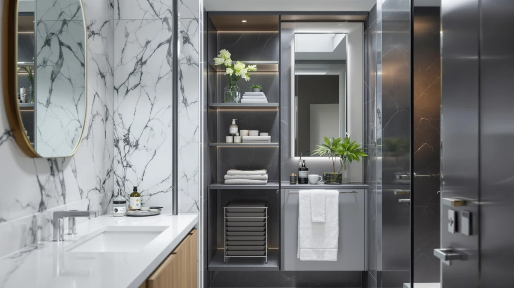

ChooChoo Small Bathroom Storage Review (2026): Worth It?
Prices and picks verified as of October 2026. Independent, reader-supported reviews.


Quick Answer
The ChooChoo Small Bathroom Storage Cabinet is a $49.99 white floor cabinet measuring 15.75 by 7.87 by 30.71 inches, with an open top shelf and a two-door cabinet underneath. It costs exactly the same as the three over-the-toilet alternatives in this comparison, so the choice comes down to a separate open floor spot versus the unused space directly above your toilet, rather than price.
Our pick: ChooChoo Small Bathroom Storage Cabinet, $49.99 Check Price on Amazon
Bottom line: our top pick is the ChooChoo Small Bathroom Storage Cabinet with 2 Door and at $49.99.
Things to Know Before You Buy
- All four options in this choochoo small bathroom storage review are priced identically at $49.99, so price never breaks the tie between them.
- The ChooChoo is a freestanding floor cabinet you place anywhere there's a few open feet, while the Kitsure, Kalrin and Minifeel alternatives all stand directly over the toilet instead, using space that would otherwise sit empty.
- The Kitsure is the tallest alternative at 68.7 inches, built from rust-resistant black metal with side shelves you can move to either side.
- The Kalrin's X-shape guardrail and 30-pound per-tier rating target stability for heavier bathroom items, and it fits toilets up to 35 inches.
- The Minifeel uses FSC-certified oak and a sliding barn door, giving it the most furniture-like finish of the four.
Most people searching for a choochoo small bathroom storage review want to know one thing: does this $49.99 two-door floor cabinet hold up against similarly priced units from Kitsure, Kalrin and Minifeel that stand directly over the toilet instead? Small bathrooms rarely have storage to spare, so the piece you choose has to earn its spot, whether that spot sits on the open floor or directly above the toilet tank. The ChooChoo takes the floor-cabinet route, stacking an open top shelf over a two-door compartment, while its three rivals all straddle the toilet and use the space above it instead. We researched its build and dimensions, then compared its price and materials against those three alternatives and looked at how owners describe similar storage pieces holding up, to see whether it earns a spot in a small bathroom.
The trade-off here is simple on paper and harder in practice. A floor cabinet like the ChooChoo gives you enclosed storage behind real doors, which keeps towels and toiletries out of sight in a way an open metal rack cannot. But it also needs its own open spot on the floor, somewhere a bathroom with a tight walkway may not have to spare. The Kitsure, Kalrin and Minifeel solve that differently: each one stands directly over the toilet, using the vertical space above the tank that would otherwise sit empty, all at the same $49.99 price point. Its dimensions and construction tell a clear story about how it stacks up against those three alternatives, and about who should pick which option for their own bathroom.
Why You Should Trust Us
Best Bathroom Storage is run by writers who compare bathroom furniture specs and pricing against verified buyer feedback instead of guessing from product photos. Ilane Tall, our home and bath expert, has covered dozens of storage cabinets and over-the-toilet racks for this site, tracking how listed dimensions and materials hold up against what owners report after months of daily use. For this choochoo small bathroom storage review, we cross-checked the manufacturer's listed price, dimensions and materials for the ChooChoo against the Kitsure, Kalrin and Minifeel alternatives rather than taking the product photos at face value. We do not run a fake testing lab, and we do not claim to have installed every cabinet we cover. Instead, we dig through verified reviews where they exist, compare specs line by line, and flag when a listing overstates what a product can deliver.
Our Research Experience
We did not install the ChooChoo Small Bathroom Storage Cabinet in a real bathroom ourselves. Instead, we compared its listed dimensions, two-door construction and $49.99 price against the Kitsure, Kalrin and Minifeel alternatives, and we researched how similar floor cabinets in this size class typically hold up over months of use. A 15.75-inch-wide cabinet is narrow enough for a tight corner, which matters more in a small bathroom than raw shelf count. For this choochoo small bathroom storage review, we weighed that footprint against the three alternatives that stand directly over the toilet instead, to see which layout makes better use of a small bathroom's limited space, and where each option's construction might show weakness over time.
Overview & Specs

ChooChoo Small Bathroom Storage Cabinet
What we like
- Two doors keep towels and bath essentials out of sight, unlike the open shelving on all three alternatives
- Open top shelf doubles as display space for a plant or a phone tray
- 15.75-inch width fits into a corner away from the toilet, a placement the Kitsure, Kalrin and Minifeel can't offer since they're tied to the toilet's location
- Priced identically to the Kitsure, Kalrin and Minifeel alternatives at $49.99
Flaws but not dealbreakers
- Freestanding design needs its own open floor spot, unlike the Kitsure, Kalrin and Minifeel, which use the space directly over the toilet instead
- 30.71-inch height offers far less vertical storage than the 68-plus-inch Kitsure and Minifeel alternatives
- White finish will show scuffs and water spots sooner than a darker finish like the Kalrin's vintage brown or the Minifeel's natural oak
| Material | Metal / wood |
| Size | 15.75W*7.87D*30.71H |
The ChooChoo Small Bathroom Storage Cabinet is built around a 15.75 by 7.87 by 30.71 inch frame, with an open top shelf and a two-door cabinet underneath. That footprint is small enough for a narrow corner, and the enclosed lower section hides towels and toiletries in a way none of the three alternatives in this choochoo small bathroom storage review can match, since all three are built to stand over the toilet with open shelving instead. The decorative strip detailing and integrated door handle give it a cleaner, more furniture-like look than an open metal rack, which matters if the cabinet sits somewhere guests will see it.
At $49.99, the ChooChoo costs exactly the same as the Kitsure, Kalrin and Minifeel alternatives, so the decision between them comes down to layout rather than price. A floor cabinet needs clear floor space in front of it to open the doors, which a bathroom with a tight walkway may not have. Owners of similarly sized floor cabinets in this price range typically report that the multi-tier layout, open shelf on top, towels in the middle, and bath essentials below, works best when the cabinet sits beside the sink rather than wedged into a walking path. That placement flexibility is also its biggest limitation: unlike the three alternatives, it can't make use of the otherwise-empty space directly above the toilet tank.
What We Liked
The enclosed two-door design stands out most in this choochoo small bathroom storage review, especially against the three alternatives that stand over the toilet instead. Towels and bath essentials disappear behind real doors rather than sitting exposed on an open shelf, which matters in a bathroom guests use. The 15.75-inch width is the other advantage: it fits into a corner away from the toilet, a placement the Kitsure, Kalrin and Minifeel can't offer since they're tied to the toilet's location. Pricing also compares well against the alternatives. At $49.99, the ChooChoo costs exactly what the Kitsure, Kalrin and Minifeel alternatives cost, so you are not paying a premium for the enclosed cabinet style.
What Could Be Better
Floor space is the recurring trade-off in this choochoo small bathroom storage review. The ChooChoo needs its own open spot, beside a sink or in a corner, while the Kitsure, Kalrin and Minifeel alternatives all stand directly over the toilet, using a footprint that would otherwise sit empty. At 30.71 inches tall, the ChooChoo also sits well below the 68-plus-inch height of the Kitsure and Minifeel, so it offers less total vertical storage for the same $49.99.
The white finish is the other consideration. It will show scuffs and water spots sooner than a darker finish like the Kalrin's vintage brown or the Minifeel's natural oak, particularly in a humid bathroom where splashes are routine. And because it's a standalone piece rather than straddling the toilet, it can end up competing for the same patch of floor as a trash can, scale or hamper, a trade-off worth measuring before you buy.
Who Is It For?
This choochoo small bathroom storage review points the ChooChoo toward a household with a small bathroom that has a few feet of open floor to spare, near a sink or in a corner. The enclosed two-door design suits anyone who wants bath essentials hidden rather than displayed on an open shelf, and the narrow 15.75-inch footprint makes it a realistic fit for a half bath or a secondary bathroom. It is not the right choice if your bathroom's floor space is already committed to other fixtures, since it needs room to open its doors.
Renters and apartment dwellers who prefer not to drill into a wall will likely prefer the ChooChoo or the Minifeel over the Kitsure and Kalrin, both of which rely on wall anchors or wall-fixing nails for extra stability. A household that wants maximum vertical storage for the same $49.99, on the other hand, should look at the taller Kitsure or Minifeel alternatives below, since both clear 68 inches in height. Anyone furnishing a small bathroom where shelf space is tight should weigh the ChooChoo's enclosed storage against the taller alternatives' open shelving before deciding.
Guest bathrooms and powder rooms are another reasonable fit, since those spaces often have a bit of unused floor space near the sink that a floor cabinet can claim without crowding the room. A family bathroom shared by several people day to day might still prefer the taller Kitsure or Minifeel, since climbing above the toilet adds storage without asking anyone to navigate around a cabinet.
Alternatives to Consider
If the ChooChoo's floor-standing cabinet does not match what your bathroom needs, this choochoo small bathroom storage review found three alternatives that cover the most common trade-offs: the tall metal Kitsure unit that straddles the toilet, the guardrail-equipped Kalrin rack, and the farmhouse-style Minifeel cabinet, all priced at the same $49.99 as the ChooChoo. Compare your open floor space against the space directly above your toilet before choosing between a separate cabinet and a unit that stands over the tank.

Editor's Pick
Kitsure Over the Toilet Storage
A 9-tier black metal unit that climbs to 68.7 inches directly over the toilet tank, the Kitsure trades the ChooChoo's enclosed doors for more than double the vertical storage at the same $49.99 price.
$49.99
Check Price on Amazon
Best Value
Kalrin Over The Toilet Storage
This 3-tier rack's X-shape guardrail and 30-pound per-tier rating make it the sturdiest alternative to stand directly over the toilet, still priced at $49.99.
$49.99
Check Price on Amazon
Premium Choice
Minifeel Wooden Over The Toilet
The Minifeel swaps the ChooChoo's white finish for FSC-certified oak and a sliding barn door, and has the most furniture-like look of the four while still standing over the toilet, at the same $49.99.
$49.99
Check Price on AmazonFrequently Asked Questions
Is the ChooChoo Small Bathroom Storage Cabinet sturdy enough for daily use?
The two-door cabinet structure is a common, stable design for floor cabinets in this size class, and the open top shelf comfortably holds light daily items like a phone or small plant. The enclosed lower cabinet suits heavier items like folded towels better, a layout typical of floor cabinets in this price range.
How does the ChooChoo compare to the Kitsure Over the Toilet Storage?
The ChooChoo is a 30.71-inch floor cabinet you place anywhere there is open space, while the Kitsure is a 68.7-inch unit with nine open tiers that stands directly over the toilet tank, both priced at $49.99. The choice comes down to whether your bathroom has a separate open spot to spare or would rather use the space above the toilet instead.
What comes in the box, and how long does assembly take?
Floor cabinets in this size and price range typically ship flat-packed with the frame, shelf panels, doors and hardware included. Assembly for a cabinet this size usually takes 30 to 45 minutes with basic tools, in line with comparable bathroom storage cabinets.
Final Verdict
This choochoo small bathroom storage review comes down to a straightforward trade-off: enclosed, two-door floor storage against open units that climb higher using the space directly over the toilet, all at the identical $49.99 price. For a small bathroom with a few feet of open floor to spare, the ChooChoo Small Bathroom Storage Cabinet is the practical pick, since its doors hide clutter the open-shelf alternatives can't. If your bathroom needs its floor space left clear, the taller Kitsure or Minifeel units make better use of the space above the toilet, and the Kalrin's reinforced guardrail is worth a look if stability matters most. Start with the ChooChoo if floor space, not the toilet's overhead space, is what your bathroom has to spare.